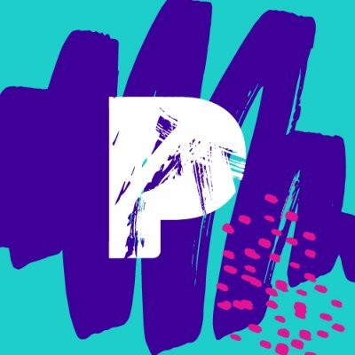

Designed and implemented large scale graph models to understand usage of Slack across organizations.
Worked as a part of Quantitative Research team to generate reliable insights on user communication
May 2019- Aug 2019
San Francisco, CA

Data Scientist Intern
Pandora Media Inc
Developed and implemented various machine learning models for helping 36% (18 M) of Pandora’s listeners to start a music station they would prefer at the beginning of the listener session
Designed multi arm bandit experiment to validate the impact of the recommended station across Pandora’s listener base
June 2018- Aug 2018
Oakland, CA
Graduate Research Assistant
Arizona State University
Conducted and analyzed over 130+ hours of observational study involving students collaborative
work on digital tablets to hypothesize and establish di erent qualitative levels of collaborative
human behavior.
Implemented an analytic engine that can classify interactions between pairs of students from the
log and speech data using various algorithms and validated their accuracy.
Performed extensive feature engineering in R from a combination of user interaction logs and low
level acoustic and prosodic information in order to improve balanced accuracy score(BAC) by
15% above baseline
Developed a system in android that allows students to work on digital tablets and send data in
real time for analysis
Dec 2012-present
Tempe, AZ
Infosys Research Labs
System Engineer (Research)
Designed and developed bug prediction system that provides various metrics such as release
readiness of the system, partial code commits, detect similar bugs and helps in decision support
for product managers.
Clustered millions of commit data and developer pro les based on their source code version
history.
Won most promising debutant award for my work in 2011.